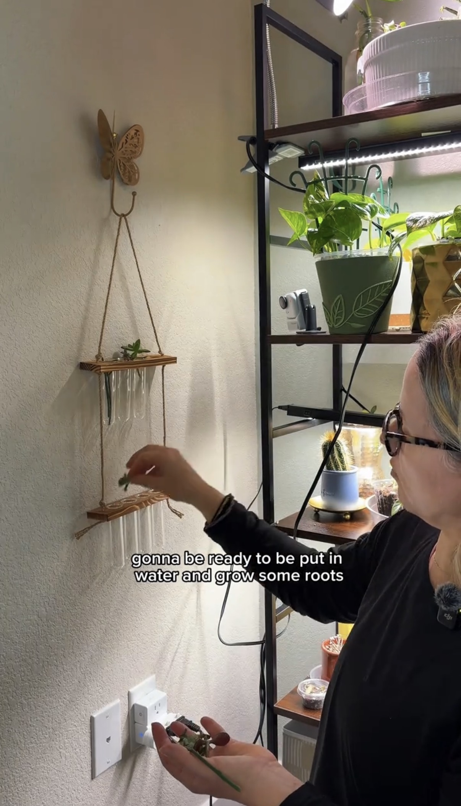

Why I Needed an Upgrade
The smaller wall-mounted propagation hangers I started with were a total win. They looked cute on the window, kept everything organized, and honestly made me feel like I had my plant life together. But there's only so much window space to go around, and between my succulents, cuttings, and trailing pothos experiments, I hit the wall — literally. When you've run out of spots and you still have cuttings sitting on the counter waiting for a home, it's time to upgrade the setup.
The 8-tube station gives me more volume, more flexibility, and — most importantly — enough room to run a proper side-by-side experiment. More on that in a minute.
The New Strategy: Grow Light Reflection Instead of the Windowsill
Here's where I'm doing things differently this time. My previous propagation setup lived right on the windowsill, which sounds ideal in theory — natural light, close to the glass — but in practice, that spot gets drafty. Temperature fluctuations are not your friend when you're trying to coax tiny roots out of a leaf cutting. Stress slows everything down, and a cold draft near the glass in late winter is real stress for a succulent prop.
So this round, I've positioned the 8-tube station to catch the reflected light from my grow lights rather than sitting directly under them or on the windowsill. The light still reaches the cuttings — but indirectly, which keeps the intensity gentler and the temperature more stable. For young propagations that don't have roots yet and can't take up water, harsh direct light can actually cause more harm than good. A softer, steadier light situation is the move at this stage.
I use a combination of bulbs in my space — including the GE BR30 Full Spectrum Grow Light Bulb and the SANSI LED Grow Light Bulb 10W 2-Pack. Both put out a solid full spectrum, and having them positioned strategically means I can get usable reflected light in spots that don't get direct beam. It's a simple trick that makes a real difference.

The new 8-tube setup — Jade, Aeonium, and Pothos all getting started, positioned to catch reflected grow light instead of a drafty windowsill.
What I'm Propagating: Jade, Aeonium & Pothos
I've got three different plants going at once this round, which I love because it lets me compare how different species respond to the same conditions.
- Jade (Crassula ovata): A classic succulent propagation. Jade is generally pretty forgiving — leaves and stem cuttings both work well — but it still needs that callus time before going into water or soil.
- Aeonium: Slightly trickier than Jade because Aeoniums are more sensitive to rot. Getting the callus right is non-negotiable here.
- Pothos: The wildcard of the group. Pothos is famously easy to propagate in water, so I'm curious to see how it performs alongside the succulents in the same station setup.
The Callusing Step: Why I Always Wait Before Water
Before any cutting or leaf went into a tube, I let everything sit out and callus for a few days. This is a step I never skip with succulents, and I genuinely think it's one of the most important things you can do to prevent rot during water propagation.
When you take a cutting or remove a leaf, the wound at the base is open and vulnerable. If you put it directly into water, that open tissue can absorb too much moisture before it's ready, which creates the perfect environment for rot to set in. Letting it callus — just sitting it out in a dry spot at room temperature for 2–4 days — seals off that cut end. Once it's calloused, it's far more resilient when it finally touches water.
It feels counterintuitive to wait when you're excited to get started, but this step genuinely saves props. I've lost enough cuttings to rot to be a firm believer.
The Experiment: Root Drops vs. Plain Water
Okay, here's the part I'm most excited about. There's a constant debate in the plant community about whether additives like root drops or rooting hormone actually speed up propagation, or whether plain water does the same job. I've seen convincing arguments on both sides, and honestly the only way to know for sure is to test it myself.
So I've split the 8 tubes right down the middle:
- 4 tubes: Plain water only, changed regularly to keep it fresh.
- 4 tubes: Water with root drops added.
Everything else stays the same — same light exposure, same room temperature, same species where possible, same callusing time. The only variable is what's in the water. I'll be checking in at 7 days with a full update on which side is showing root development first, and I'll keep documenting until I have a real answer. If you want to follow the experiment in real time, make sure you're following on TikTok — the updates are going there first.
Tips for Setting Up Your Own Propagation Station
Whether you're just starting out or upgrading like I did, here are the things I've learned the hard way so you don't have to:
- Callus your succulents first. I know I already said this, but it bears repeating. 2–4 days minimum, dry spot, no direct sun.
- Don't use cold tap water straight from the faucet. Let it sit for a bit or use room-temperature filtered water. Cold water can shock the cuttings, especially in winter.
- Change the water regularly. Stagnant water invites bacteria and algae. Every 5–7 days minimum, more often if it starts to look cloudy.
- Watch the light intensity. Propagations without roots can't compensate for heat and water loss the way rooted plants can. Bright indirect light is better than harsh direct light at this stage.
- Be patient. Succulents are slow. Pothos will root in a week; Jade might take a month. Don't give up on them too early.
For anyone who wants to give their propagations a little extra support once they do start rooting and eventually get potted up, I've had really good results using Purived Houseplant Food for the Pothos once it's established, and Purived Cactus & Succulent Food for the Jade and Aeonium once they're potted. Neither goes into the propagation water itself — that's too early — but having them ready for the next phase is smart planning.
And when it does come time to pot up, I always use a well-draining mix. For succulents I use Miracle-Gro Cactus & Succulent Mix amended with a generous amount of Doter Organic Perlite for extra drainage. Succulents that have been water propagated can sometimes struggle with the transition to soil, and having a very airy, fast-draining mix makes that adjustment a lot easier.
Products I Use 🛍️
* These are affiliate links — if you buy through them, I earn a small commission at no extra cost to you. I only recommend products I actually use on my own plants.
GE BR30 Full Spectrum Grow Light Bulb
This is one of the bulbs I use to light my propagation area. The full spectrum output is great for keeping cuttings happy while they're getting established.
Find on Amazon →SANSI LED Grow Light Bulb 10W 2-Pack
My other go-to grow light bulb — I use these in spots where I need reliable full spectrum coverage without a lot of bulk. The 2-pack is great value.
Find on Amazon →Purived Cactus & Succulent Food
Once my Jade and Aeonium props graduate to soil, this is what I feed them. Formulated specifically for succulents so I'm not over-fertilizing with the wrong nutrients.
Find on Amazon →Purived Houseplant Food
My go-to fertilizer once the Pothos props get potted up and established. Gentle and easy to use — no measuring drama.
Find on Amazon →Doter Organic Perlite 1 Quart
I mix this into the cactus and succulent soil when I'm potting up water-propagated succulents. Extra drainage makes the soil-to-water transition much smoother.
Find on Amazon →